Vitis™ Application Acceleration Development Flow Tutorials |
Using GT Kernel in Alveo with Vitis Flow¶
Version: Vitis 2022.1
The Xilinx Alveo Data Center accelerator cards provide networking connectivity such as one or two QSFP28 ports depending on the card. The QSFP28 interface can support a variety of Ethernet configurations including 10GbE, 25GbE, 40GbE, and 100GbE. Multiple instances of a single lane Ethernet protocol is also possible. With Vitis flow and the latest platforms, users can create RTL kernels containing GTY transceivers, provide streaming connection to other kernels including HLS compute units, datapath buffering into DRAM memories, and driver access for moving data between the host and FPGA by the Vitis tools to implement of full integrated design.
This simple tutorial illustrates the steps to include GTY transceivers in RTL kernel and integrate it in top level hardware overlay design with Vitis. Alveo U200 card is used as example platform and you could apply similar steps to other Alveo cards easily. Please note the example design in this tutorial has no realistic functions and is just used for methodology explaination here. Two lane number configurations (x1 and x4) are provided here.
Features and Design Overview¶
Below is the block diagram of the design, which consists two RTL kernels:
ethernet_krnl_axis_x1/4: This kernel includes one single-channel or four-channel 10G ethernet sub-system IP, one AXI control slave and two or eight AXI stream data FIFO modules. The data to/from GT transciever is streamed to the AXI stream data FIFO and connected outside. The kernel use XRT ap_ctrl_hs execution model. The host program can control the ethernet IP via AXI control slave.
data_fifo_krnl: This kernel just includes two AXI stream data FIFO modules, which are connected together to form the loopback datapath to externel AXI stream ports. The kernel use XRT ap_ctrl_none
In the top level hardware topology these two or five kernels (depends on lane number) are stitched via AXI stream connection. The AXI control slave of kernel ethernet_krnl_axis_x1/4 is also connected to the platform. Necessary reset and clock signals including those for GT transceivers are connected to relevant resources provided by the platform.

Just like mentioned earlier, there is no meaningful functions from this design topology, so no host program code is provided.
Design Flow and Tutorial Steps¶
Firstly please see below the important files of this tutorial:
.
├── connectivity_x1/4.cfg Vitis linking configuration file
├── gen_ip_x1/4.tcl Vivado script to generate IP
├── Makefile Makefile for every steps
├── pack_data_fifo_kernel.tcl Vivado script to pack data fifo kernel
├── pack_eth_x1/4_kernel.tcl Vivado script to pack ethernet kernel
└── rtl/ RTL sources code for two kernels
RTL wrapper files for these two kernels are provided in the ./rtl directory. All steps are executed in command line interface and Makefile is used to control the flow. In the Makefile following lines designate Alveo U200 as the target card for the design, and you could modify this for other Alveo cards. Also you can modify the lane number setting (default is 1).
# Target hardware setting, uncomment appropriate lines
BOARD := u200
PLATFORM := xilinx_u200_gen3x16_xdma_2_202110_1
PART := xcu200-fsgd2104-2-e
Now let’s enter the root path of the tutorial and go over the tutorial step by step.
1. Generate IP¶
As explained previously, two IPs are needed in the design: ethernet sub-system (xxv_ethernet) and AXI stream FIFO (axis_data_fifo). They can be generated by either Vivado GUI mode or batch mode via Tcl script. Here we just use following command to use Vivado batch mode to generate them.
make gen_ip
This will start Vivado to execute the Tcl script gen_ip.tcl. The generated IP will reside in the created directory ip_generation. You can review the Tcl script to infer the dialague setting if using Vivado GUI mode. Please note some setting for IP xxv_ethernet is related to the target Alveo card you are using.
2. Package Kernels¶
Here since we have already got the RTL design files in the ./rtl directory, we need to package them along with the IP (.xci files) into two Vitis kernels (.xo files). Again, you can use Vivado GUI version of IP packager to finish the IP packaging, but we will use command line and Tcl scripts to finish this. Use following command to package the kernels, then two kernel files (ethernet_krnl_axis_x1.xo and data_fifo_krnl.xo) will be generated in currently for following Vitis linking jobs.
make pack_kernel
You can review Tcl scripts pack_eth_kernel.tcl and pack_data_fifo_kernel.tcl to get the kernel packaging setting, which corresponds to GUI mode Vivado dialogues. In the packaging steps for ethernet kernel, you can see that in additional to standard AXI bus interfaces, two additional bus interfaces are created for later Vitis v++ automatic connection feature: gt_port for GT transceivers data bus and gt_refclk for GT transceivers differential clock.
3. Vitis Linking¶
Here we use Vitis v++ tool to finish hardware linking and generate the .xclbin file. Execute following command:
make build_hw
This will execute v++ command with connectivity_x1.cfg as the linking configuration file. Please find following lines in the configuration file which instruct Vitis to connect GT transceivers specific signals for xilinx_u200_gen3x16_xdma_1_202110_1 platform.
# For xilinx_u200_gen3x16_xdma_1_202110_1 platform
connect=eth0/clk_gt_freerun:ss_ucs/aclk_kernel_00
connect=io_clk_qsfp_refclka_00:eth0/gt_refclk
connect=eth0/gt_port:io_gt_qsfp_00
If you are using other cards or platforms, the signal/port names might be different and you need to modify this accordingly. You can refer to the platform information reported by platforminfo command for these platform specific GT signal/port naming. For example:
platforminfo -p xilinx_u200_gen3x16_xdma_1_202110_1 -v
After the v++ linking job finishes, you can use Vivado GUI to open the Vivado project ./_x/link/vivado/vpl/prj/prj.xpr, then open the block design ulp. You can see that all the signals for the two kernels (with instance names df0 and eth0), especially those GT transceivers signals have been connected correctly, like below screenshot.

When v++ linking finishes, we will get the XCLBIN file top_level.xclbin. You could also use Vivado to open the project ./_x/link/vivado/vpl/prj/prj.xpr and open the finally implemented design to review the reports and silicon floorplan.
Summary¶
To use GTY transceivers in Alveo card with Vitis flow is very simple and straightforward. You just need to handle it as ordinary RTL kernels with some extra configuration for GT transceivers specific signals. Vitis provides powerful and flexible capabilities to help the user to finish the integration efficiently.